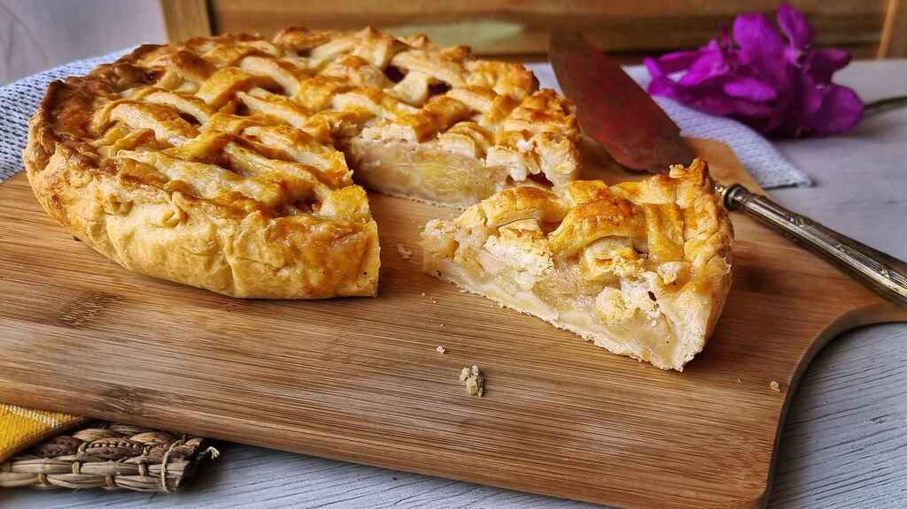

Apple Pie

Description
I remember coming home sullen one day because we'd lost a softball game. Grandma, in her wisdom,
suggested, "Maybe a slice of my homemade apple pie will make you feel better." One bite, and Grandma
was right. If you want to learn how to make homemade apple pie filling, this is really the only
recipe you need. —Maggie Greene, Granite Falls, Washington
Ingredients
- 1/2 cup sugar
- 1/2 cup packed brown sugar
- 3 tablespoons all-purpose flour
- 1 teaspoon ground cinnamon
- 1/4 teaspoon ground ginger
- 1/4 teaspoon ground nutmeg
- 6 to 7 cups thinly sliced peeled tart apples
- 1 tablespoon lemon juice
- Dough for double-crust pie
- 1 tablespoon butter
- 1 large egg white
Steps
- Preheat oven to 375°. In a small bowl, combine sugars, flour and spices; set aside. In a large bowl,
toss apples with lemon juice. Add sugar mixture; toss to coat.
- On a lightly floured surface, roll one half of dough to a 1/8-in.-thick circle; transfer to a 9-in. pie
plate. Trim even with rim. Add filling; dot with butter. Roll remaining dough to a 1/8-in.-thick circle.
Place over filling. Trim, seal and flute edge. Cut slits in top. Beat egg white until foamy; brush
over crust. If desired, sprinkle with turbinado sugar and ground cinnamon. Cover edge loosely with foil.
- Bake 25 minutes. Remove foil; bake until crust is golden brown and filling is bubbly, 20-25 minutes longer.
Cool on a wire rack. If desired, serve with ice cream and caramel sauce.